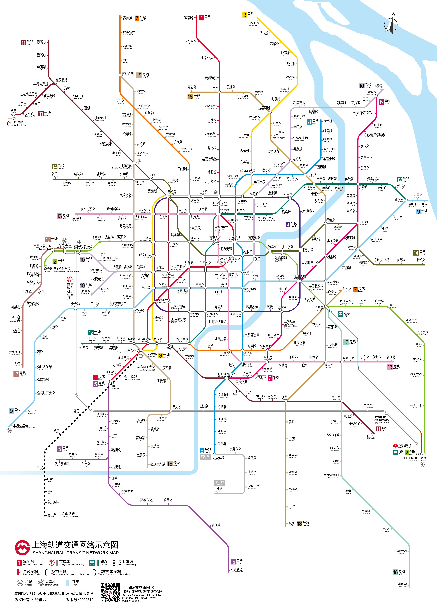

松江大学城出行攻略
整理从市区往返松江校区、以及在松江大学城内日常出行的主要方式。具体线路和班次请以实时地图 App / 公交公司为准。
🚇 上海地铁线路图
点击图片可放大查看

📍 两个常用校区
- 松江校区：上海市松江区文翔路1550号
- 虹口校区：上海市虹口区大连西路550号
🚇 市区 → 松江校区
- 乘坐轨道交通9号线至松江大学城站。
- 出站后可选择：公交、打车/网约车、共享单车或步行前往学校。
- 如果携带行李较多，建议直接打车或网约车到“上海外国语大学松江校区”门口。
从虹桥火车站/虹桥机场出发，可先换乘地铁至9号线，再按上述方式前往；出发前建议用地图 App 规划实时路线。
🚌 松江大学城站 → 学校
- 可参考松江5路等公交线路，在“上外松江校区”或附近站点下车。
- 也可使用打车/网约车，定位到“上海外国语大学松江校区”。
- 短途出行可选用共享单车，校园周边和大学城内车辆较多。
- 具体公交线路、站点和首末班时间请以地图 App 实时显示为准。
🏫 松江大学城内日常出行
- 步行：大学城内高校间距离适中，日常上课、吃饭步行很方便。
- 共享单车：适合去文汇路、周边商圈或地铁站。
- 公交：大学城内有多个公交站，可连接地铁站、商圈和学校。
- 打车/网约车：夜间或赶时间时更省力，建议结伴出行。
📌 小提醒
- 新生报到季学校周边车流量大，建议预留充足时间。
- 跨校区出行（松江 ↔ 虹口）距离较远，建议提前查好地铁换乘方案或学校班车信息。
- 遇到路线不确定时，可以打开右下角林小满聊天气泡问问学姐。